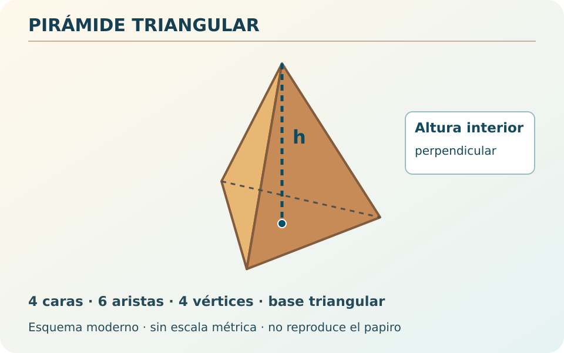
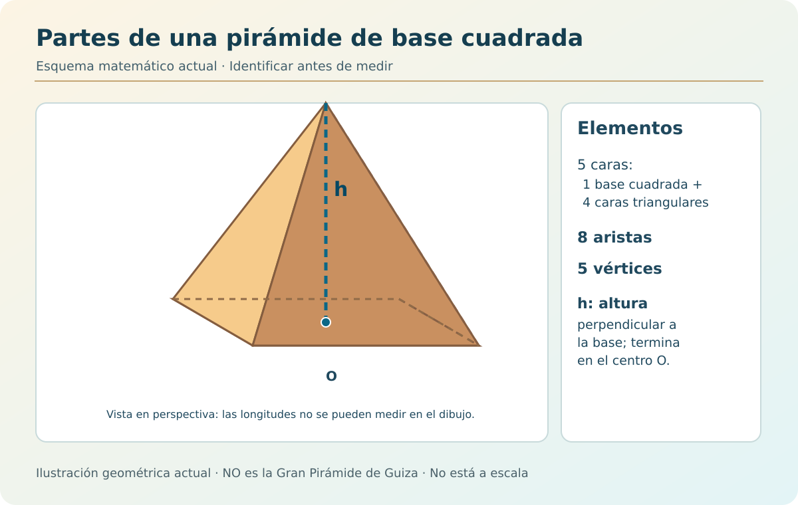
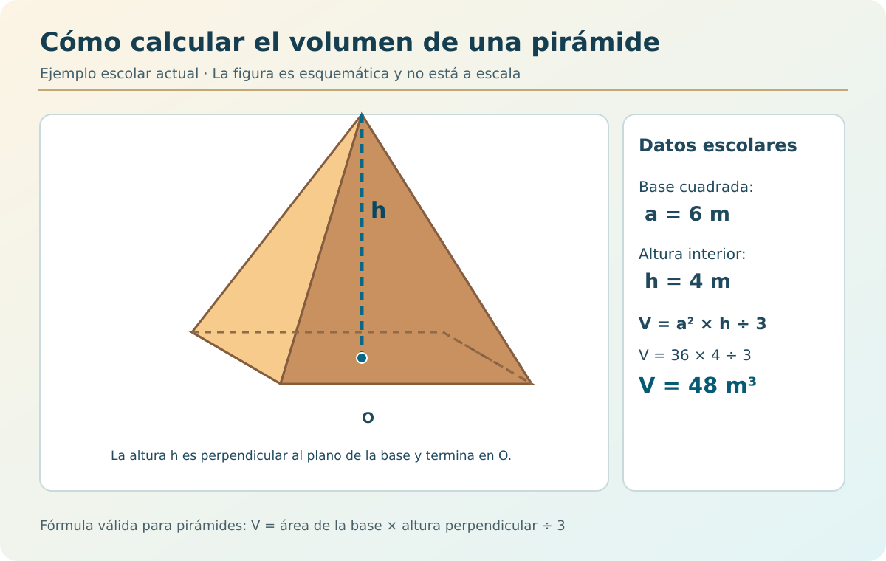
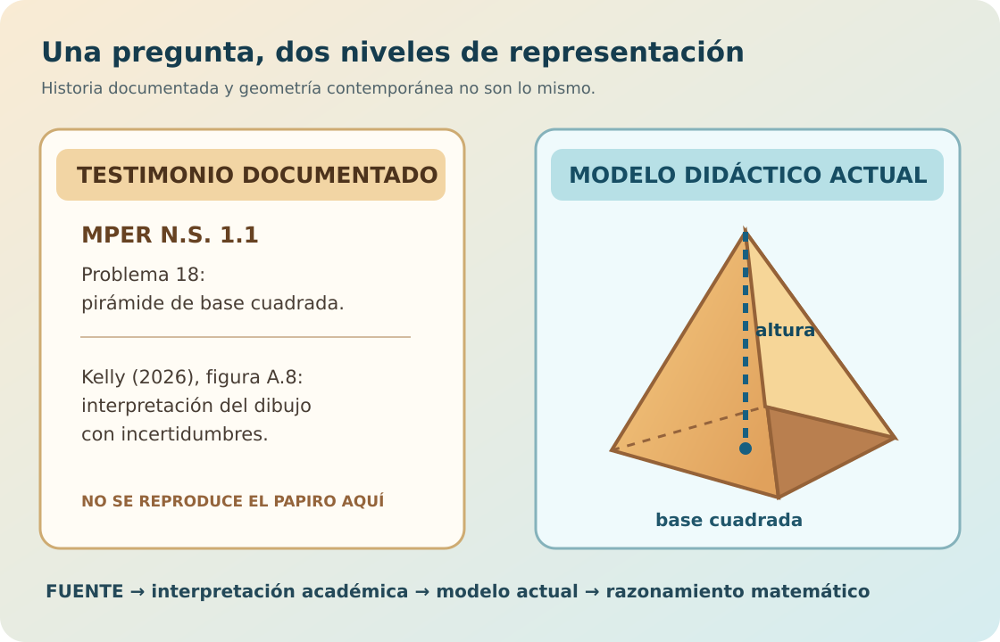

La pista del investigador
Los diagramas antiguos no siempre se corresponden de forma inequívoca con sus problemas.
Referencia histórica: Kelly (2026), figura A.4, p. 16.
LABORATORIO HISTÓRICO · EGIPTO ROMANO
Investiga dibujos de pirámides de antiguos papiros matemáticos. Descubre qué significan, compáralos con modelos actuales y explica tus conclusiones.
ESCOGE TU INVESTIGACIÓN
ETAPA 1 · OBSERVAR

ILUSTRACIÓN CONTEMPORÁNEA · NO FUENTE ANTIGUAEsta imagen ha sido diseñada para aprender geometría. No reproduce los trazos, números ni procedimientos del papiro antiguo.
Los diagramas antiguos no siempre se corresponden de forma inequívoca con sus problemas.
Referencia histórica: Kelly (2026), figura A.4, p. 16.
ETAPA 2 · COMPARAR
DOCUMENTO HISTÓRICO · LECTURA CRÍTICA
Se conservan diagramas agrupados de pirámides triangulares.
Consultar el artículo científico ↗
No se muestran aquí recortes de fotografías o ediciones científicas que aún requieren revisión editorial para publicación pública.
MODELO 3D · CONSTRUCCIÓN ACTUAL
Pirámide triangular: base triangular, tres caras laterales triangulares y cuatro vértices.
Gira con el dedo o el ratón. El tamaño visualizado no procede del papiro.
ETAPA 3 · RESOLVER
EXPERIMENTO MATEMÁTICO ACTUAL
Las medidas de este apartado son ejemplos escolares inventados, no medidas antiguas. El modelo 3D no cambia de tamaño al modificar los valores.
Introduce las medidas y calcula el volumen.
Este tronco tiene dos bases paralelas. No se aplica la fórmula de una pirámide completa. El cálculo de su volumen queda fuera de esta actividad; puedes identificar sus caras y explicar sus diferencias.
ETAPA 4 · ARGUMENTAR
Tus notas permanecen únicamente en la página durante la sesión, sin enviarse a ningún servidor. No introduzcas nombres ni datos personales. Puedes copiar o descargar el cuaderno.
MATERIAL COMPLEMENTARIO · GEOMETRÍA VISUAL
Amplía las imágenes para observar sus elementos, comprobar operaciones y distinguir entre testimonios históricos y modelos matemáticos actuales.

Reconoce la base, las caras, los vértices, las aristas y la altura perpendicular. Compruébalos en el modelo 3D.
Esquema matemático revisado · Sin escala métrica · No representa un monumento concreto

Comprueba el ejemplo escolar: V = (6 × 6 × 4) / 3 = 48 m³. Las cifras no proceden del papiro.
Esquema matemático revisado · Ejemplo escolar de medidas declaradas; dibujo no a escala

La fuente nos aporta un testimonio histórico; la pirámide actual nos ayuda a explicar geometría. Este esquema no reproduce un papiro.
Ilustración SVG elaborada para esta actividad · Referencia: Kelly (2026)
Referencia: Kelly, T. (2026). Diagrams in ancient Greek practical mathematics. Historia Mathematica, 75, 103248. DOI 10.1016/j.hm.2026.103248.
Fuente antigua: MPER N.S. 1.1 (TM 63192), problemas 10–13, 18 y 19. La datación paleográfica en la segunda mitad del siglo I d. C. es aproximada, no una datación directa.
Representaciones: los tres SVG del laboratorio son ilustraciones geométricas modernas producidas para esta actividad; no son fotografías del papiro, transcripciones diplomáticas ni reconstrucciones de monumentos antiguos. Los modelos GLB son asimismo modernos. No atribuimos a los escribas las fórmulas ni medidas escolares.
Accesibilidad y privacidad: los botones pueden manejarse con teclado y las preguntas disponen de alternativas textuales. La aplicación no almacena datos del alumnado; la carga del visor 3D usa una biblioteca alojada en Google. Las pruebas reales con lector de pantalla no están completadas. La utilidad pedagógica requiere pilotaje y evaluación empírica.